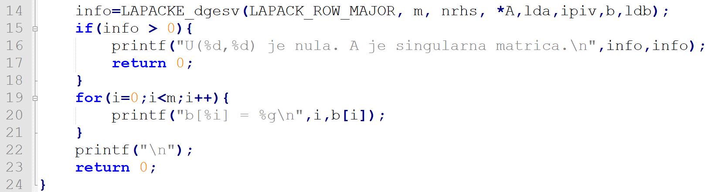

Veljko Petrović
Decembar, 2022
| Prefiks | Opis |
|---|---|
| s | Float |
| d | Double |
| c | Complex |
| z | D.Complex |
| Prefiks | Opis |
|---|---|
| ge | Opšta matrica; nema ograničenja |
| sy | Simetrična matrica za koju važi \(A = A^{T}\) |
| he | Hermitijanska matrica; matica u kojoj važi da su parovi u transponovanju jedni drugima kompleksni konjugati |
| tre | Trougaona matrica |
| Prefiks | Opis |
|---|---|
| b | Trakasta (banded) matrica. Matrica u kojoj je većina vrednosti 0, ali one koje nisu su u dijagonalama (trakama). |
| p | Nabijena (packed) matrica. Ako je matrica takva da se od jednog trougla može rekonstruisati cela matrica (simetrična, Hermitijanska, ili trouglasta) može se čuvati samo taj jedan trougao pročitan po kolonama u jednom velikom nizu. |
| Ime | Opis | Nivoi preciznosti |
|---|---|---|
swap |
Menja mesta vektorima | s,d,c,z |
scal |
Skalira vektor za konstantu | s,d,c,z,cs,zd |
copy |
Kopira vektor | s,d,c,z |
axpy |
Izvršava | s,d,c,z |
| Ime | Opis | Nivoi preciznosti |
|---|---|---|
dot |
Skalarni proizvod | s,d,ds |
dotc |
Skalarni proizvod konjugovane vrednosti kompleksne vrednosti i neke druge kompleksne vrednosti | c,z |
dotu |
Kompleksni skalarni proizvod | c,z |
sdsdot |
Skalarni proizvod plus skalar | sds |
| Ime | Opis | Nivoi preciznosti |
|---|---|---|
nrm2 |
Proračun 2-norme | s,d,sc,dz |
asum |
Proračun 1-norme | s,d,sc,dz |
i_amax |
Proračun ∞-norme | s,d,c,z |
| Ime | Opis | Nivoi preciznosti |
|---|---|---|
rotg |
Uz date skalare a i b, sračunaće c i s takve da: Ovo se zovu paramteri Givensove rotacije | s,d |
rot |
Primenjuje Givens rotaciju, drugim rečima, ako joj se daju dva vektora kao ulaz, svaki element vektora se transformiše na sledeći način: | s,d |
| Ime | Opis | Nivoi preciznosti |
|---|---|---|
rotmg |
Proračuna modifikovanu Givensovu rotacionu matricu. Ako su dati skalirajući faktori d1 i d2 i koordinate (x1, y1) ulaznog vektora sračunati 2x2 matricu H takvu da: | s,d |
rotm |
Za vektore x i y proračuna: | s,d |
| Ime | Opis |
|---|---|
mv |
Prozivod matrice i vektora. |
sv |
Rešava matricu (trouglastu), tj. sistem linearnih jednačina koji ona predstavlja. |
mm |
Proizvod dve matrice uz učešće skalara. |
rk |
Računa opštu jednačinu: |
r2k |
Računa opštu jednačinu: |
cblas_dgemmcblas_dgemm| Ime | Opis |
|---|---|
| SV | Rešava sisteme linearnih jednačina. |
| LS, LSY, LSS, LSD | Rešava problem najmanjih kvadrata, minimizuje x u formuli ravnoj drugoj normi razlike između vektora b i matrice A puta vektor x. |
| LSE | Kao gore, ali sa ograničenjem da Bx jednako d. |
| GLM | Rešenje problema opšteg linearnog modela, tj. minimiziranje x bazirano na drugoj normi vektora y sa ograničenjem |
| EV, EVD,EVR | Računanje sopstvene vrednosti i sopstvenih vektora simetrične matrice A |
| Ime | Opis |
|---|---|
| ES | Traši sopstvene vrednosti i vektore za nesimetrične matrice A |
| SVD, SDD | Dekompozicija matrice. |
